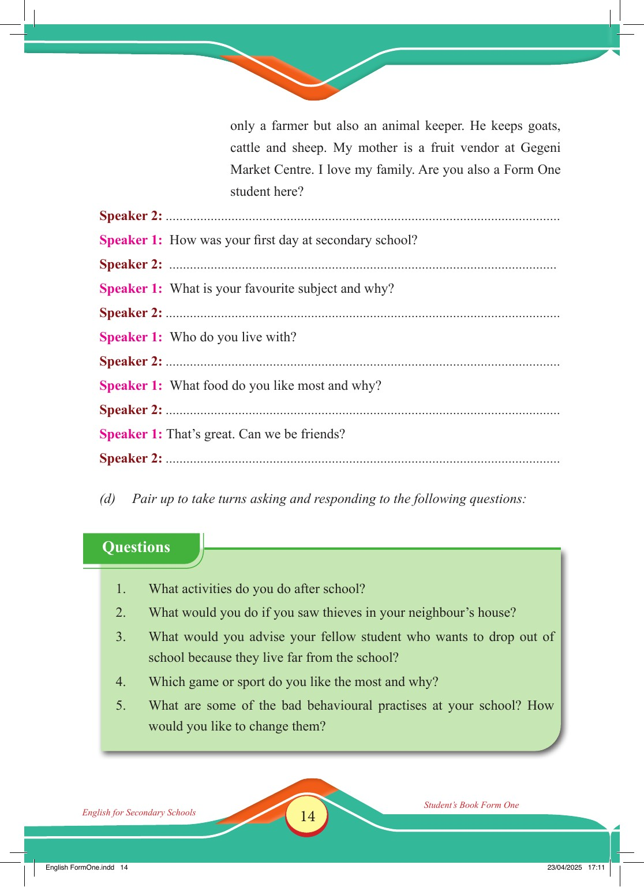

Accessible text transcript - page 14
Use the reader's read-aloud controls or select an individual segment below.
Printed book page 14. only a farmer but also an animal keeper. He keeps goats, cattle and sheep. My mother is a fruit vendor at Gegeni Market Centre. I love my family. Are you also a Form One student here? Speaker 2: Speaker 1: How was your first day at secondary school? Speaker 2: Speaker 1: What is your favourite subject and why? Speaker 2: Speaker 1: Who do you live with? Speaker 2: Speaker 1: What food do you like most and why? Speaker 2: Speaker 1: That’s great. Can we be friends? Speaker 2: (d) Pair up to take turns asking and responding to the following questions: Questions 1. What activities do you do after school? 2. What would you do if you saw thieves in your neighbour’s house? 3. What would you advise your fellow student who wants to drop out of school because they live far from the school? 4. Which game or sport do you like the most and why? 5. What are some of the bad behavioural practises at your school? How would you like to change them? English for Secondary Schools Student’s Book Form One Return to the page image